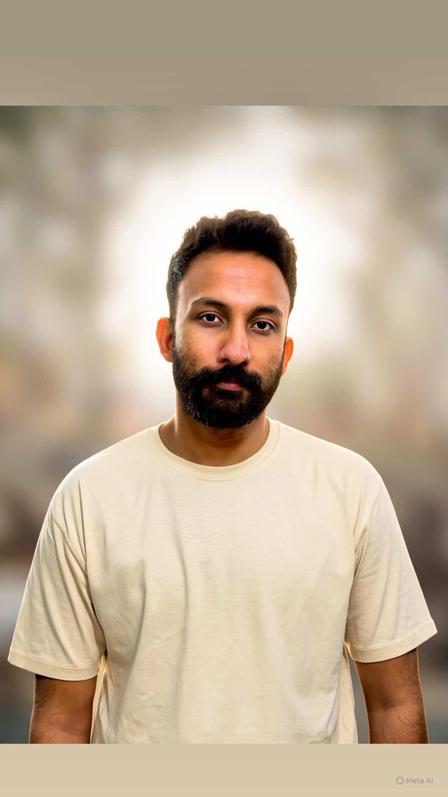
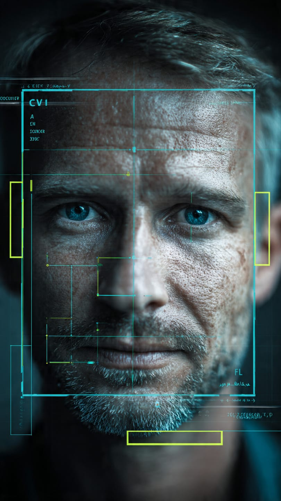
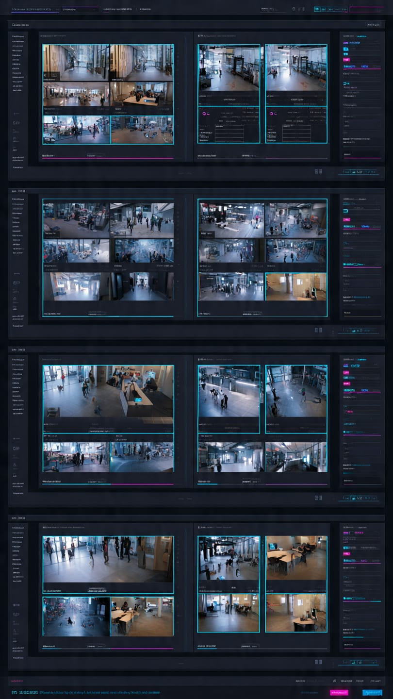
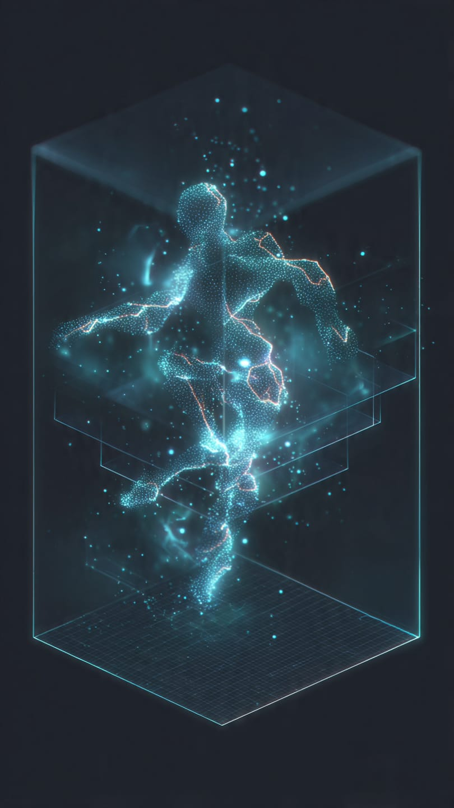

I'm Hassaan, a Full Stack AI Solutions Engineer. I design and deploy LLM/RAG pipelines, computer vision systems, and scalable backend infrastructure, taking projects from prototype to reliable production deployment on cloud and edge.

Full Stack AI Solutions Engineer specializing in Large Language Models, computer vision and scalable backend systems, focused on turning research ideas into reliable, production-ready software.
I build systems end-to-end — from real-time computer vision pipelines and facial recognition access control, to RAG-powered document retrieval and Q/A chatbots, to fine-tuned LLMs for healthcare a solution. My experience spans on-prem and cloud deployment, container orchestration, and building AI-agnostic APIs that make models easy to integrate and scale.
I enjoy collaborating with teams around the world — new problems are how I keep growing as an engineer.
Core tools I reach for across model development, backend engineering and deployment.
Primary language
Deep learning
Backend services
Systems & perf.
Image processing
Object detection
LLMs & fine-tuning
RAG & retrieval
DeepStream, Triton
Classical ML
NLP & text processing
Graph analysis
Orchestration
Cloud deployment
Data processing
Databases & vector search
Building high-performance, real-time computer vision applications using Nvidia DeepStream & GStreamer.
Orchestrating real-time computer vision workloads using Docker Swarm.
Building a video analytics dashboard with multiprocessing for precision control over RTSP streams.
Training and deploying state-of-the-art YOLO models for real-time object detection and tracking.
Built a dashboard for managing camera input streams, model selection and observing compute usage.
Lead architect in building and deploying a facial recognition access control system with Nvidia Triton Inference Server, FastAPI interface and Milvus DB for search and retrieval.
Leveraged cloud technologies to forecast and optimize cloud costs using system-level metrics.
Designed and developed scalable backend systems using microservices architectures.
Leveraged large language models for implementing RAG systems for user-specific knowledge bases and requirements.
Designed and developed intricate data models for storage and accession of complex data via concurrent API calls.
Deployed well-orchestrated solutions optimized for on-prem and cloud services.
Collaborated on the development of a global outage monitoring system for banking services.
Built a document retrieval, processing and ingestion pipeline to client storage using llama-index for RAG and Postgres for staging.
Developed and deployed an information retrieval system using llama-index, using Postgres' pgvector for storing vector indices to build a Q/A chatbot, leveraging a Docker Compose stack for deployment.
Used state-of-the-art ResNet-152 ImageNet-pretrained models for ethnicity classification of profile images.
Designed and developed a highly-performing semantic search solution for extracting relevant information from large corpora of text.
Designed and developed a profile-ranking mechanism for executive profiles using natural language processing and statistical methods.
Oversaw deployment of existing as well as newly-incorporated AI systems on both on-prem and cloud infrastructure.
Analyzed systems using evaluation metrics such as AUC, Precision and Recall for better results.
FAST, Islamabad
Graduate program focused on machine learning, statistical modeling and large-scale data systems.
COMSATS University, Islamabad
Undergraduate program covering core computer science, algorithms and software engineering foundations.
Certifications spanning ML mathematics, cloud infrastructure and deep learning.
Six projects spanning LLM/RAG systems, computer vision, and production AI infrastructure. Click any card for the full write-up.

Lead architect for a real-time facial recognition system using Nvidia Triton, FastAPI and Milvus for search and retrieval.

DeepStream/GStreamer pipelines orchestrated with Docker Swarm, with a dashboard for RTSP stream and model management.
Document ingestion pipeline using llama-index and pgvector, deployed as a Docker Compose stack for client knowledge bases.
QLoRA fine-tuning of Llama-3 and Flan-T5 for causal language modeling and text classification, including SOAP note generation.

Stereo vision-based 3D pose estimation with Basler cameras, deployed for real-time inference on Nvidia Jetson AGX Orin.
Fully offline, layered pipeline fusing webcam pose/face/hand tracking with voice feature extraction to drive configurable, hot-reloadable real-time assessment and feedback.
Available for freelance AI, LLM and computer vision projects.
LLMs, RAG, Computer Vision, MLOps
Open for freelance engagements
Open to remote engagements
Reach out through this platform to discuss scope and timelines.